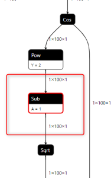
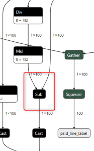
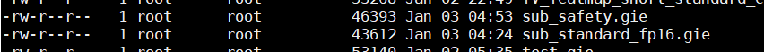

SafetySubPlugin benchmark test
LIU Dingjie (XC-AS/PJ-WIN-PER5)
model
Subtracting fixed numbers (TBD) 
Vector reduction 
command
./safe_plugin_build--onnx=sub_safety.onnx --saveEngine=sub_safety.gie./safe_plugin_infer--bmp=input.bmp --loadEngine=sub_safety.gie --dumpInTensor=fv_input.tensor --dumpOutTensor=sub_output.tensor#subPlugin Inference time = 0.5807./trtexec--loadInputs="input":fv_input.tensor --loadEngine=sub_standard_fp16.gie --exportOutput=trtexec_sub_output.json --dumpProfile[01/03/1970-04:59:17] [I][01/03/1970-04:59:17] [I] === Profile (1343 iterations ) ===[01/03/1970-04:59:17] [I] Layer Time (ms) Avg. Time (ms) Median Time (ms) Time %[01/03/1970-04:59:17] [I] Reformatting CopyNodeforNetwork Input input 110.49 0.0823 0.0823 4.0[01/03/1970-04:59:17] [I] Conv_0 + Relu_1 716.02 0.5331 0.5331 26.1[01/03/1970-04:59:17] [I] Conv_2 470.28 0.3502 0.3500 17.1[01/03/1970-04:59:17] [I] custom_added_Conv0 688.85 0.5129 0.5129 25.1[01/03/1970-04:59:17] [I] custom_added_Sub1 376.44 0.2803 0.2800 13.7[01/03/1970-04:59:17] [I] Reformatting CopyNodeforOutput Tensor 0 to custom_added_Sub1 383.71 0.2857 0.2838 14.0[01/03/1970-04:59:17] [I] Total 2745.79 2.0445 2.0422 100.0[01/03/1970-04:59:17] [I]&&&& PASSED TensorRT.trtexec [TensorRT v8610]# ./trtexec --loadInputs=input:fv_input.tensor --loadEngine=sub_standard_fp16.gie --exportOutput=trtexec_sub_output.json --dumpProfile
tensor accuracy
python3 compare_tensor.py --safety_tensor sub_output.tensor --standard_tensor trtexec_sub_output.jsonarrarysize=8847360+---------------------+----------+| Compare Status | Failed |+---------------------+----------+| Totaldiffnum | 8839196 || > 0.1 percentage | 0.000 % || > 0.01 percentage | 0.033 % || > 0.001 percentage | 24.036 % || > 0.0001 percentage | 88.201 % || >0.00001 percentage | 94.313 % |+---------------------+----------+calc latency
Item
time(ms)
comment
standard trtexec
0.2803
safety infer
0.5807
kernel calc time
engine size
Item
size(byte)
comment
standard
43612
safety
46393
